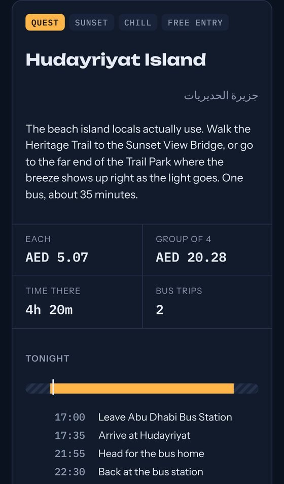

Product · PWA
Lore
Turns "let's just go to the mall again" into a sidequest: a niche spot in Abu Dhabi, the real bus route there and back, a game to play, and a fog-of-war map of your own city.
Made for my friend group's 5pm to 10:30pm, low-budget hangouts. It plans around the time window, the group size, AED budgets and sunset.
- Real ITC bus lines, Hafilat and taxi fares from Abu Dhabi Mobility, and sunset computed from solar equations
- Installable and works offline (service worker tested with the network cut)
- Shared Lore Book with no accounts, synced through Campfire
- A daily research job adds verified spots; data-integrity tests guard it
JavaScriptPWACanvasPlaywright
